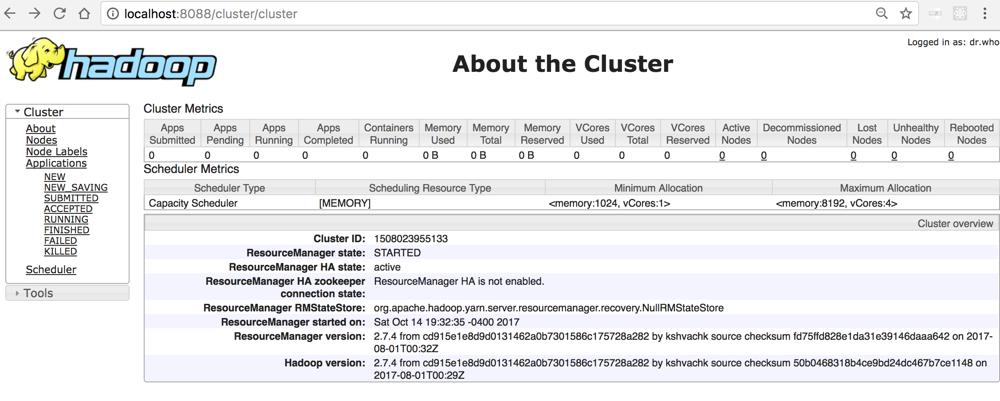

Get Hadoop running on my Mac
Table of Contents
- 1. Introduction
- 2. Get the stable hadoop binary
- 3. Unzip the tar.gz to my home dir
- 4. Check java runtime exist (else install from Oracle)
- 5. Export env vars for hadoop and save it in ~/.bashrc
- 6. Get an idea of where basic hadoop commands reside
- 7. Check that bin/hadoop runs OK
- 8. Add default file system to the core config
- 9. Format the distributed disk
- 10. Start the DFS server, the namenode and datanode
- 11. Check the single node cluster
- 12. Where the log files are
- 13. Test the basic dfs commands
- 14. Start the YARN server, the resource manager
- 15. Check nodes and browse directory
- 16. Shutting down
- 17. Useful links
1 Introduction
This note logs the steps I've taken to get hadoop installed and running on my Mac Pro.
2 Get the stable hadoop binary
From the official place http://www.apache.org/dyn/closer.cgi/hadoop/common/ which suggested that the closest mirror site for me is http://download.nextag.com/apache/hadoop/common/stable get the .tar.gz which is the binary file, which is about 255MB
3 Unzip the tar.gz to my home dir
bash-3.2$ cd bash-3.2$ which gzcat /usr/bin/gzcat bash-3.2$ gzcat ~/Downloads/hadoop-*.tar.gz |tar xf - bash-3.2$ du -hs ~/hadoop-*/ 486M /Users/gug/hadoop-2.7.4/ bash-3.2$
4 Check java runtime exist (else install from Oracle)
Since hadoop is written in java, I need to have a run-time java installation. And I do.
bash-3.2$ which java /usr/bin/java bash-3.2$ java -version java version "1.8.0_144" Java(TM) SE Runtime Environment (build 1.8.0_144-b01) Java HotSpot(TM) 64-Bit Server VM (build 25.144-b01, mixed mode) bash-3.2$ /usr/libexec/java_home /Library/Java/JavaVirtualMachines/jdk1.8.0_144.jdk/Contents/Home bash-3.2$
5 Export env vars for hadoop and save it in ~/.bashrc
bash-3.2$ /usr/libexec/java_home /Library/Java/JavaVirtualMachines/jdk1.8.0_144.jdk/Contents/Home bash-3.2$ export JAVA_HOME=/Library/Java/JavaVirtualMachines/jdk1.8.0_144.jdk/Contents/Home export HADOOP_HOME=/Users/gug/hadoop-2.7.4/
6 Get an idea of where basic hadoop commands reside
bash-3.2$ cd $HADOOP_HOME bash-3.2$ ll bin/h* -rwxr-xr-x 1 gug staff 6488 Jul 31 20:35 bin/hadoop -rwxr-xr-x 1 gug staff 8786 Jul 31 20:35 bin/hadoop.cmd -rwxr-xr-x 1 gug staff 12223 Jul 31 20:35 bin/hdfs -rwxr-xr-x 1 gug staff 7478 Jul 31 20:35 bin/hdfs.cmd bash-3.2$ ll sbin/st*.sh -rwxr-xr-x 1 gug staff 1128 Jul 31 20:35 sbin/start-balancer.sh -rwxr-xr-x 1 gug staff 3734 Jul 31 20:35 sbin/start-dfs.sh -rwxr-xr-x 1 gug staff 1357 Jul 31 20:35 sbin/start-secure-dns.sh -rwxr-xr-x 1 gug staff 1347 Jul 31 20:35 sbin/start-yarn.sh -rwxr-xr-x 1 gug staff 1179 Jul 31 20:35 sbin/stop-balancer.sh -rwxr-xr-x 1 gug staff 3206 Jul 31 20:35 sbin/stop-dfs.sh -rwxr-xr-x 1 gug staff 1340 Jul 31 20:35 sbin/stop-secure-dns.sh -rwxr-xr-x 1 gug staff 1340 Jul 31 20:35 sbin/stop-yarn.sh bash-3.2$
7 Check that bin/hadoop runs OK
bash-3.2$ $HADOOP_HOME/bin/hadoop
Usage: hadoop [--config confdir] [COMMAND | CLASSNAME]
CLASSNAME run the class named CLASSNAME
or
where COMMAND is one of:
fs run a generic filesystem user client
version print the version
jar <jar> run a jar file
note: please use "yarn jar" to launch
YARN applications, not this command.
checknative [-a|-h] check native hadoop and compression libraries availability
distcp <srcurl> <desturl> copy file or directories recursively
archive -archiveName NAME -p <parent path> <src>* <dest> create a hadoop archive
classpath prints the class path needed to get the
credential interact with credential providers
Hadoop jar and the required libraries
daemonlog get/set the log level for each daemon
trace view and modify Hadoop tracing settings
Most commands print help when invoked w/o parameters.
8 Add default file system to the core config
The hdfs://localhost:9000 link allows other apps to communicate with hadoop running on my mac.
bash-3.2$ cd $HADOOP_HOME bash-3.2$ ll etc/hadoop/core-site.xml* -rw-r--r-- 1 gug staff 872 Oct 14 19:23 etc/hadoop/core-site.xml -rw-r--r-- 1 gug staff 774 Jul 31 20:35 etc/hadoop/core-site.xml~ bash-3.2$ diff etc/hadoop/core-site.xml etc/hadoop/core-site.xml~ 20,23d19 < <property> < <name>fs.defaultFS</name> < <value>hdfs://localhost:9000</value> < </property> bash-3.2$
9 Format the distributed disk
Similar to formatting the hard disk or SD card in the good old days.
bash-3.2$ $HADOOP_HOME/bin/hdfs namenode -format 2017-10-14 17:53:25,724 INFO namenode.NameNode: STARTUP_MSG: /************************************************************ STARTUP_MSG: Starting NameNode STARTUP_MSG: host = garys-mbp.home/192.168.1.16 STARTUP_MSG: args = [-format] STARTUP_MSG: version = 3.0.0-beta1 STARTUP_MSG: classpath = ... 2017-10-14 17:53:27,208 INFO common.Storage: Storage directory /tmp/hadoop-gug/dfs/name has been successfully formatted. 2017-10-14 17:53:27,218 INFO namenode.FSImageFormatProtobuf: Saving image file /tmp/hadoop-gug/dfs/name/current/fsimage.ckpt_0000000000000000000 using no compression 2017-10-14 17:53:27,321 INFO namenode.FSImageFormatProtobuf: Image file /tmp/hadoop-gug/dfs/name/current/fsimage.ckpt_0000000000000000000 of size 375 bytes saved in 0 seconds. 2017-10-14 17:53:27,332 INFO namenode.NNStorageRetentionManager: Going to retain 1 images with txid >= 0 2017-10-14 17:53:27,337 INFO namenode.NameNode: SHUTDOWN_MSG: /************************************************************ SHUTDOWN_MSG: Shutting down NameNode at garys-mbp.home/192.168.1.16 ************************************************************/ bash-3.2$
10 Start the DFS server, the namenode and datanode
bash-3.2$ cd $HADOOP_HOME bash-3.2$ sbin/start-dfs.sh 17/10/14 19:24:51 WARN util.NativeCodeLoader: Unable to load native-hadoop library for your platform... using builtin-java classes where applicable Starting namenodes on [localhost] Password: localhost: starting namenode, logging to /Users/gug/hadoop-2.7.4/logs/hadoop-gug-namenode-Garys-MBP.home.out Password: localhost: starting datanode, logging to /Users/gug/hadoop-2.7.4/logs/hadoop-gug-datanode-Garys-MBP.home.out Starting secondary namenodes [0.0.0.0] Password: 0.0.0.0: starting secondarynamenode, logging to /Users/gug/hadoop-2.7.4/logs/hadoop-gug-secondarynamenode-Garys-MBP.home.out 17/10/14 19:25:24 WARN util.NativeCodeLoader: Unable to load native-hadoop library for your platform... using builtin-java classes where applicable bash-3.2$ bin/hdfs dfs -mkdir /user 17/10/14 19:25:43 WARN util.NativeCodeLoader: Unable to load native-hadoop library for your platform... using builtin-java classes where applicable
11 Check the single node cluster
http://localhost:8088/cluster Click About on the left navigation panel and see something like below

12 Where the log files are
bash-3.2$ cd $HADOOP_HOME bash-3.2$ ll logs/ total 712 -rw-r--r-- 1 gug staff 0 Oct 14 19:20 SecurityAuth-gug.audit -rw-r--r-- 1 gug staff 46992 Oct 15 09:01 hadoop-gug-datanode-Garys-MBP.home.log -rw-r--r-- 1 gug staff 507 Oct 14 19:25 hadoop-gug-datanode-Garys-MBP.home.out -rw-r--r-- 1 gug staff 69534 Oct 15 09:58 hadoop-gug-namenode-Garys-MBP.home.log -rw-r--r-- 1 gug staff 4960 Oct 15 09:19 hadoop-gug-namenode-Garys-MBP.home.out -rw-r--r-- 1 gug staff 51372 Oct 15 09:58 hadoop-gug-secondarynamenode-Garys-MBP.home.log -rw-r--r-- 1 gug staff 507 Oct 14 19:25 hadoop-gug-secondarynamenode-Garys-MBP.home.out drwxr-xr-x 2 gug staff 68 Oct 14 19:32 userlogs
13 Test the basic dfs commands
bash-3.2$ cd $HADOOP_HOME bash-3.2$ bin/hdfs dfs -mkdir /user 17/10/14 19:25:43 WARN util.NativeCodeLoader: Unable to load native-hadoop library for your platform... using builtin-java classes where applicable bash-3.2$ bin/hdfs dfs -mkdir /user/gug 17/10/14 19:25:51 WARN util.NativeCodeLoader: Unable to load native-hadoop library for your platform... using builtin-java classes where applicable bash-3.2$ bin/hdfs dfs -put README.txt /user/gug/ 17/10/14 19:27:22 WARN util.NativeCodeLoader: Unable to load native-hadoop library for your platform... using builtin-java classes where applicable bash-3.2$ bin/hdfs dfs -ls /user/gug/ 17/10/14 19:27:35 WARN util.NativeCodeLoader: Unable to load native-hadoop library for your platform... using builtin-java classes where applicable Found 1 items -rw-r--r-- 3 gug supergroup 1366 2017-10-14 19:27 /user/gug/README.txt bash-3.2$ bin/hdfs dfs -ls /user/gug/README.txt bash-3.2$ bin/hdfs dfs -cat /user/gug/README.txt 17/10/14 19:30:47 WARN util.NativeCodeLoader: Unable to load native-hadoop library for your platform... using builtin-java classes where applicable For the latest information about Hadoop, please visit our website at: ....
14 Start the YARN server, the resource manager
bash-3.2$ cd $HADOOP_HOME bash-3.2$ sbin/start-yarn.sh starting yarn daemons starting resourcemanager, logging to /Users/gug/hadoop-2.7.4/logs/yarn-gug-resourcemanager-Garys-MBP.home.out Password: localhost: starting nodemanager, logging to /Users/gug/hadoop-2.7.4/logs/yarn-gug-nodemanager-Garys-MBP.home.out bash-3.2$
15 Check nodes and browse directory
16 Shutting down
bash-3.2$ sbin/stop-dfs.sh 17/10/15 17:47:51 WARN util.NativeCodeLoader: Unable to load native-hadoop library for your platform... using builtin-java classes where applicable Stopping namenodes on [localhost] Password: localhost: stopping namenode Password: localhost: stopping datanode Stopping secondary namenodes [0.0.0.0] Password: 0.0.0.0: stopping secondarynamenode 17/10/15 17:48:49 WARN util.NativeCodeLoader: Unable to load native-hadoop library for your platform... using builtin-java classes where applicable bash-3.2$ sbin/stop-yarn.sh stopping yarn daemons stopping resourcemanager Password: localhost: no nodemanager to stop no proxyserver to stop bash-3.2$